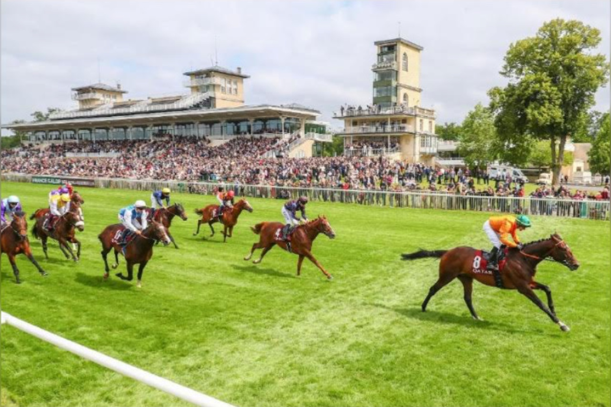
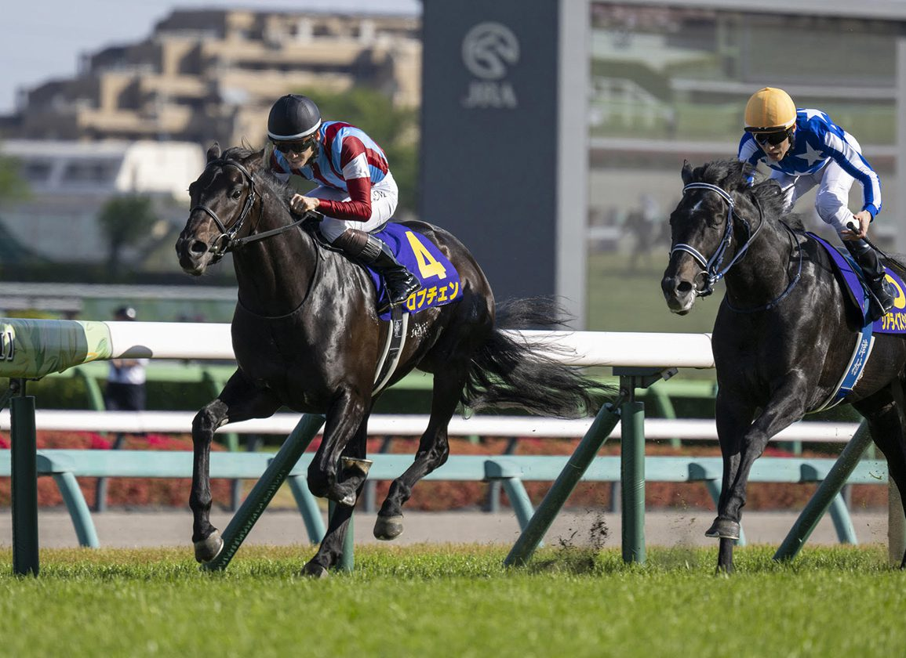

Internacional
-

Chantilly se consagra como capital del galope en la jornada del Prix du Jockey Club
El histórico hipódromo francés vive una de las citas más distinguidas del calendario europeo con la disputa del Prix du Jockey Club, clásica que reúne a los mejores productos de tres años en un escenario de elegancia y tradición.
-

Lovcen apunta al Tokyo Yushun como favorito de la 93ª edición del Derby japonés
El sábado 31 de mayo se disputa en Tokyo Racecourse la 93ª edición del Tokyo Yushun, el Derby japonés (G1) sobre césped y reservado a tres años. La cita corona al mejor 3yo de la temporada en Japón y es una de las pruebas más prestigiosas del calendario asiático.
-

El fin de semana turf: Japanese Derby, Prix du Jockey Club y GP Beamonte
El calendario internacional concentra este fin de semana tres carreras clásicas para la generación de tres años. El Tokyo Yushun (Japanese Derby) vuelve a Tokio el domingo 31 de mayo como gran cita global, con el Qatar Prix du Jockey Club de Chantilly y el Gran Premio Beamonte de La Zarzuela completando…
-

Fallece a los 92 años Gil Rowntree, miembro del Salón de la Fama del turf canadiense
El preparador Gil Rowntree, exaltado al Canadian Horse Racing Hall of Fame en 1997, falleció el pasado 24 de mayo a los 92 años de edad. Rowntree conquistó el Sovereign Award como Mejor Preparador de Canadá en 1975.
-

Mistral du Bois logra su primer triunfo de Grupo III en el Prix Caecilia de Vincennes
El trotador de la cuadra de Alain Dutheil se impuso con autoridad en la prueba disputada este viernes en el hipódromo parisino, firmando su primera victoria en este nivel de competición tras dos notables actuaciones previas.
-

Early Encore debuta con victoria en California y confirma el despegue de Early Voting
El potro Early Encore firmó un estreno brillante en California, sumándose a la racha del semental Early Voting, que en menos de un mes acumula tres ganadores de cinco debutantes.
-

Half Half, favorito del Quinté+ del lunes en Compiègne tras su triunfo de abril
El experimentado Half Half (2), con Alexis Pouchin en los estribos, encabeza los pronósticos para el Prix des Hauts-de-France, primera cita de la semana del Quinté+ en Compiègne, según el análisis de Thomas Guilmin para ParisTurf.
-

Caballo De Mar se impone en un ajustado Prix Vicomtesse Vigier
El ejemplar de cinco años volvió a brillar en ParisLongchamp, escenario donde ya conquistó el Prix du Cadran en octubre, para alzarse con la victoria en el Grupo I disputado este jueves.
-

Decisive Win logra su primera victoria en una prueba de debutantes
El potro de tres años propiedad de Great Friends Stables y Mark Davis se impuso con claridad en una carrera maiden, confirmando las buenas perspectivas de su generación.
-

Nelson du Pont confirma su progresión con un triunfo en el Prix Glauke de Vincennes
El hijo de Davidson du Pont se impuso este viernes en su debut en el hipódromo parisino, confirmando el triunfo logrado a principios de mayo en Chartres. Nicolas Bazire firmó un triplete como preparador en la jornada.
-

Renegade llega al Belmont Stakes tras su arrolladora exhibición en el Kentucky Derby
El hijo de Into Mischief superó el lastre del cajón 1 —sin ganador desde hace 41 años— con un remate demoledor en Churchill Downs que lo sitúa ahora como serio candidato en la tercera joya de la Triple Corona.
-

Star Anise afronta su prueba sobre la milla y media en el Yushun Himba (Japanese Oaks)
La potranca japonesa Star Anise comparece como favorita en el Yushun Himba, el Japanese Oaks (G1) que se disputa este fin de semana sobre hierba en Tokyo Racecourse y que reserva 2.400 metros a la mejor generación de tres años. La cita es el segundo clásico femenino japonés del año tras el Oka Sho (Japanese 1.000…
-
Charlotte Prichard anuncia su retirada como jockey a los 30 años
La amazona británica cuelga las botas tras acumular 187 victorias en Francia y hacerse con tres Cravaches d'Or femeninas. Su último gran resultado fue la medalla de plata en el Grand Steeple-Chase de Paris con Bon Garçon.
-
Paintello afronta su debut en el Quinté+ con aspiraciones tras su irregular inicio de año
El preparador Adélaïde Budka confía en las opciones del alazán de cinco años en el Premio de l'Orangerie de este domingo 24 de mayo en ParisLongchamp, pese a competir en su primer Quinté+ con valor 37 y partir desde el cajón nueve.
-

Janie Buss, heredera de los Lakers, construye su propio legado en el turf con Purple Rein Racing
La empresaria estadounidense Janie Buss, miembro de la familia propietaria de Los Angeles Lakers, ha dado el salto al mundo de las carreras con Purple Rein Racing, una cuadra que busca labrarse su propia identidad en el galope profesional.
-

Hijos de Starman y St Mark's Basilica encabezan la subasta Breeze Up de Tattersalls Ireland
Los productos de los sementales europeos Starman y St Mark's Basilica han liderado las pujas de la subasta Tattersalls Ireland Breeze Up Sale, celebrada el 22 de mayo en el centro de ventas de Fairyhouse. La cita reúne purasangres de dos años que pasan previamente por una "breeze up", exhibición de galope a alta…
-
Ludovic Gadbin confía en el debut de Rue Récamier y en las opciones de Mister George
El preparador francés presenta dos caballos este jueves en el hipódromo de ParisLongchamp, con expectativas diferenciadas: la yegua afronta su reaparición en condiciones favorables mientras el segundo defiende su progresión tras imponerse en Saint-Cloud.
-

San Isidro reúne 59 ratificados para la Jornada Internacional del 25 de Mayo con cuatro Grupos I
El Hipódromo de San Isidro celebra el lunes 25 de mayo su Jornada Internacional, una de las dos citas mayores del calendario argentino y la principal fiesta del galope llano sudamericano en la primera mitad del año. La reunión, programada en torno a la festividad patria argentina, concentrará cinco clásicas, cuatro…